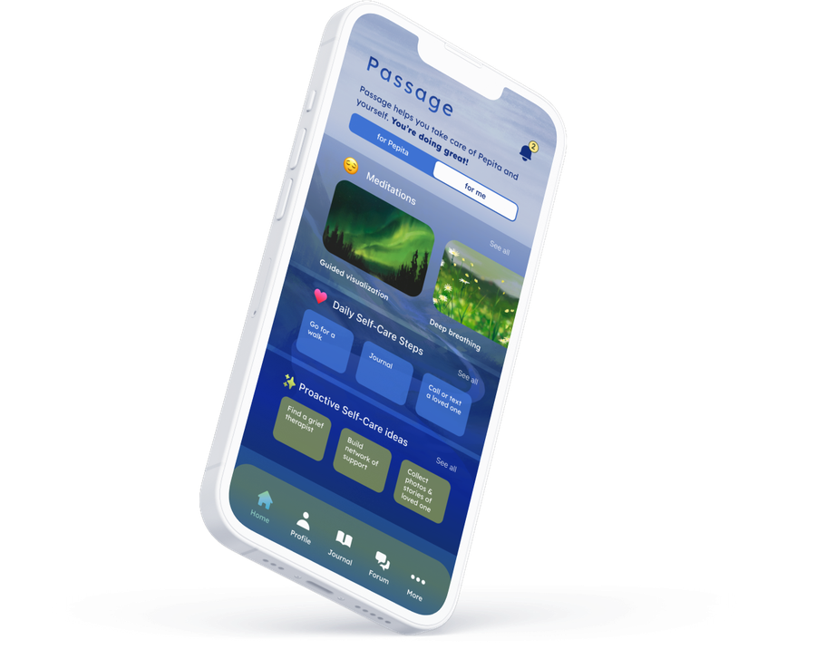

Passage: caretakers need care too
An app for someone caring for a person with a terminal illness — tracking the care, and tracking the caregiver.

the problem · everything is built for the patient
When someone you love is dying, you become an unpaid nurse, a scheduler, a pharmacist and a record keeper, usually overnight and usually while grieving in advance. There is software for the patient — portals, medication reminders, symptom trackers. There is almost nothing for the person holding the whole thing together, and that person is the one most likely to quietly fall apart.
Caretakers need care too. That sentence was the brief. It went on the landing page in the end because we never found a better way to say it.
the shape · three halves, which is the point
Most caregiving tools stop at logistics. Passage is deliberately lopsided — two thirds of it is the job, and one third is the person doing the job, given equal weight in the navigation so it cannot be skipped.
- Tracking. Medications with doses and times, meals, hygiene, movement — the things that get counted because forgetting one has consequences. The home screen opens on rings, not a list, so a glance answers "what still needs doing today".
- Care. The near future: upcoming appointments, scheduled exams, lab tests. And, because this is an app about a terminal illness and pretending otherwise would be a lie, end-of-life planning sits on the home screen too — find in-home hospice care, choose a funeral home, write a eulogy.
- For You. Guided meditation, a walk nearby, calling a friend, and a journal that gives you a prompt so you do not have to face a blank page on the worst day of your week.
the design · calm, and never cheerful
The hard part was tone. An app that is bright and encouraging about hospice is grotesque; an app that is grey and clinical adds weight to someone already carrying too much. The answer was a deep blue ground with one warm yellow doing all the emphasis — the accent appears where a person needs to act, and nowhere else — and painted landscapes rather than stock photography or illustration-library people.
I painted the landscapes myself: a valley, a river, willows and cottonwoods. They are the only soft-edged thing in the interface, and they carry the emotional register so the rest of the screens can stay literal and quiet. The one figurative illustration in the app — a caregiver pushing a wheelchair — is the only place a person appears, and it is on the page that explains what the app is for.


who did what
This was a four-person class project, and the honest split matters more than a tidy one. The idea was mine, and I brought it to the group. I designed the interface and I made every drawing, painting and illustration in the product and on the site. Erin, Ian and Tiffany ran user interviews with me and built the presentation we delivered it with. Ian owned the repository, which is why the commit history is entirely his.
It is the only piece on this site I did not do alone, and it is here for that reason. Everything else in my portfolio is a solo build; most jobs are not.


what I would change now
Four years on, the concept holds and the chrome dates it. The screens are dense where they could breathe, the type does a lot of shouting in all-caps, and the painted backgrounds sit behind cards instead of being given room. The same treatment I gave Bookspot — keep the soul, modernise the surface — is the obvious next thing to do here, and the illustrations are the part worth building around rather than decorating with.
what it taught me
- Tone is a design decision with a right answer. On a subject this heavy, the difference between callous and comforting is a colour temperature and a verb tense, and you can test for it.
- Give the neglected job equal billing. Self-care would have been a settings screen if we had followed the logistics. Putting it in the tab bar is the whole argument of the product.
- Being the one with the idea is not the same as being the one who is right. The interviews my teammates ran moved things I was attached to, and the app got better for it.
Passage, 2022
The site we launched it with — my paintings, parallaxed, and the pitch as we gave it.
open to marketing operations, analytics and martech roles
Let's talk.
Remote, or Albuquerque and hybrid. If you want the architecture behind any of the work here, ask me and I will walk you through it.